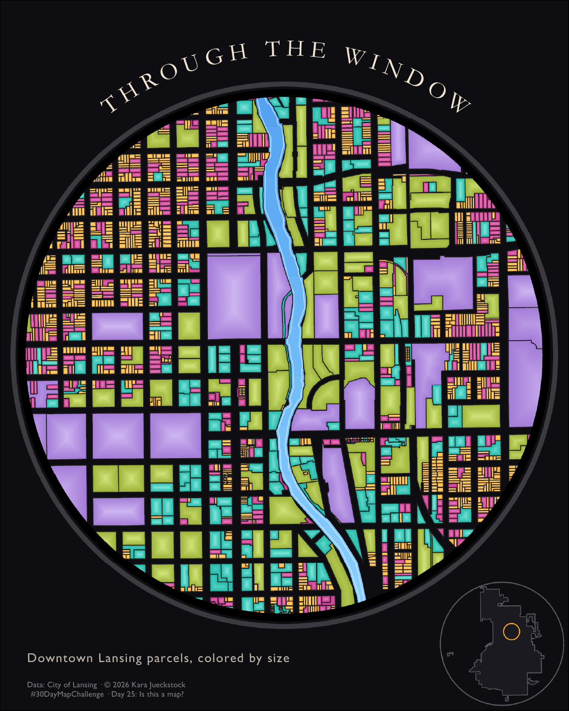
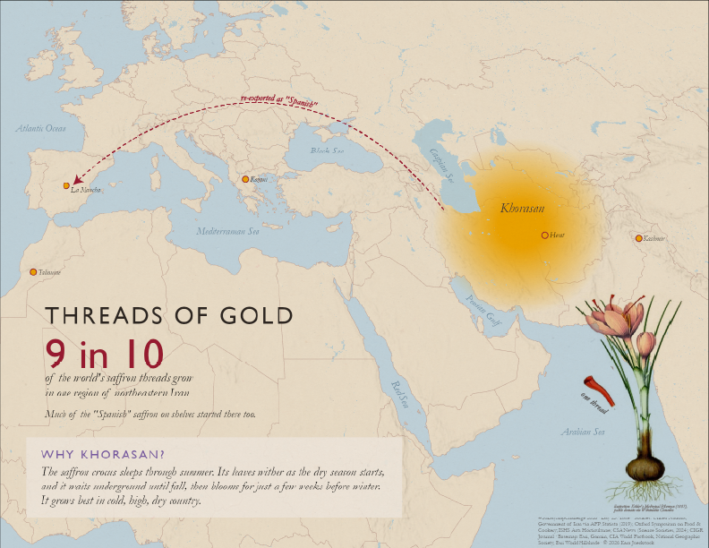
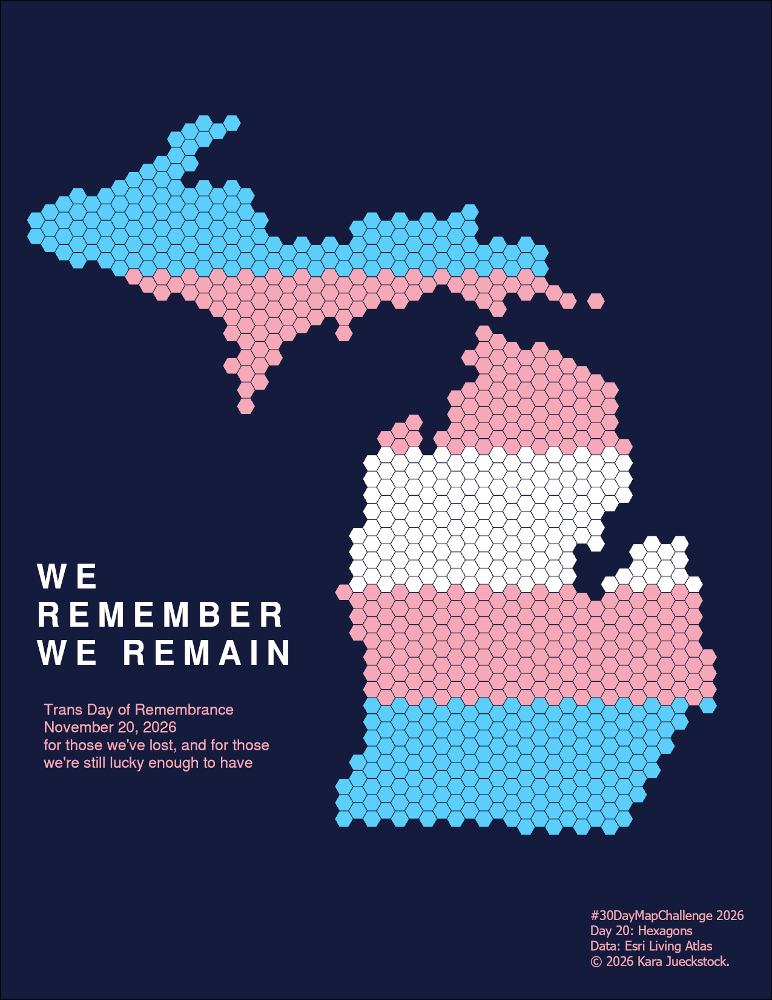
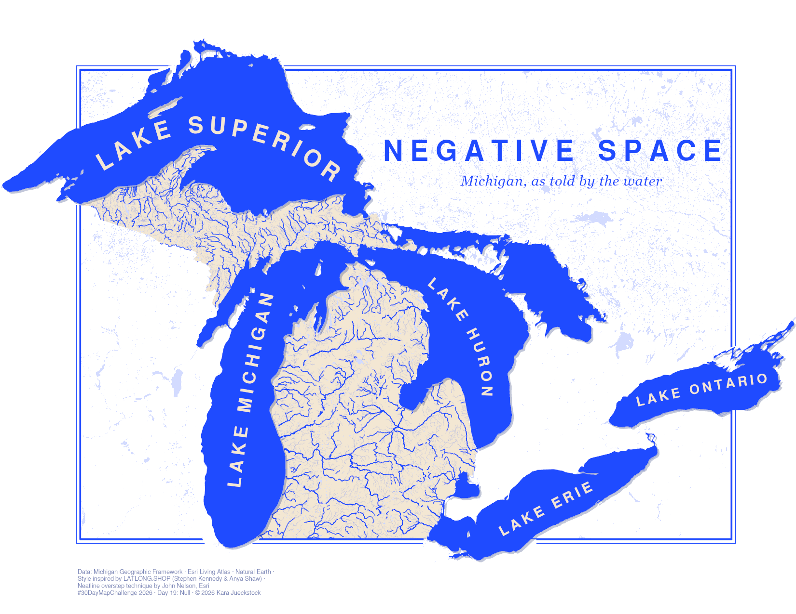
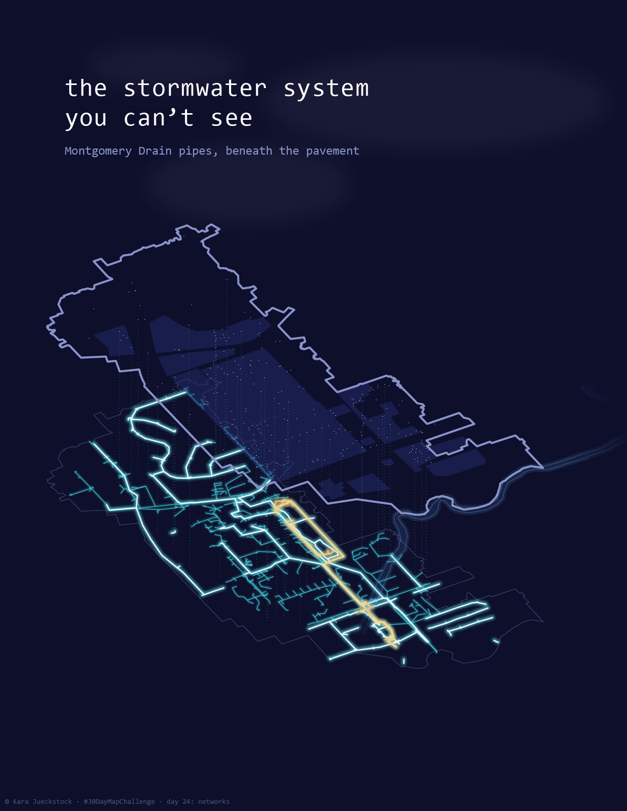
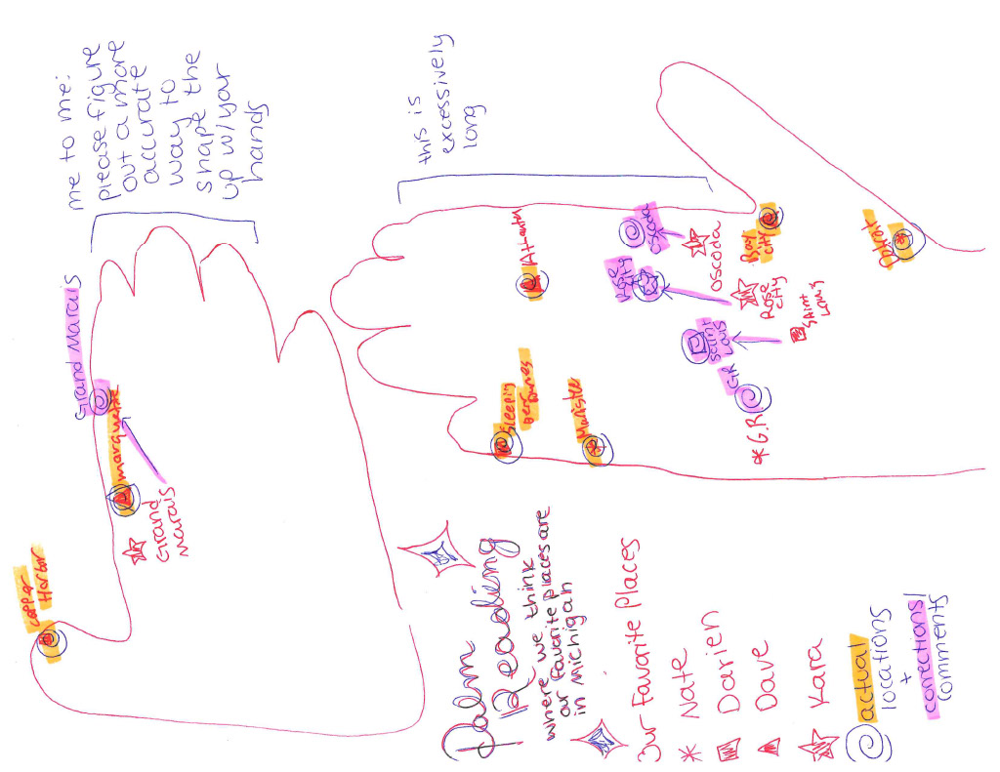

Geographer & storyteller · Lansing, Michigan

Downtown Lansing parcels, as stained glass.

Nine in ten saffron threads grow in one region of Iran.

For Trans Day of Remembrance.

Michigan, as told by the water.

Edit this caption to describe the map.

Where we think our favorite places are.
I'm a geographer and a storyteller first. I'm a creative bridge between complex concepts and people whose curiosity outpaces their attention span.
Have a story hiding in your data? I'd love to help you tell it.